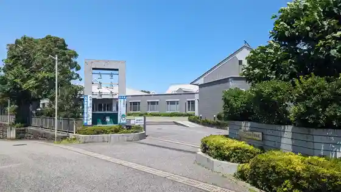
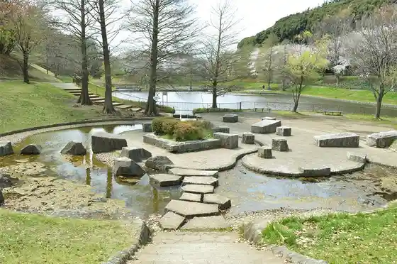
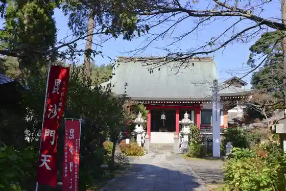

Murakami Green Park
Yachiyo, Chiba · 047-421-6777 · Official / source link

Shiro Usagi no Roiyaru Imbiteshon / Keisei Bara Sono
Yachiyo, Chiba · Official / source link

Yachiyo Ritsu Kyodo Museum
Yachiyo, Chiba · 047-484-9011 · Official / source link

Kaya Taji Ku Park
Yachiyo, Chiba · 047-406-3010 · Official / source link

Shogaku In (Bishamonten)
Yachiyo, Chiba · 047-482-7435 · Official / source link

Myo Toku Tera (Daikoku Ten)
Yachiyo, Chiba · 047-488-5402 · Official / source link
Toei Tera (Fukurokuju)
Yachiyo, Chiba · 047-488-5476 · Official / source link
Famazumagatto (Yottaiyo)
Yachiyo, Chiba · 047-489-4147 · Official / source link
Kannon Tera (Hotei Mikoto)
Yachiyo, Chiba · 047-450-2753 · Official / source link
Myoko Tera (Kichijo Ten)
Yachiyo, Chiba · 047-488-1505 · Official / source link
Chofuku Tera (Benzaiten)
Yachiyo, Chiba · 047-488-2467 · Official / source link
Tei Fuku Tera (Ebisu)
Yachiyo, Chiba · 047-450-5956 · Official / source link
Chofuku Tera (Jurojin)
Yachiyo, Chiba · 047-485-4030 · Official / source link